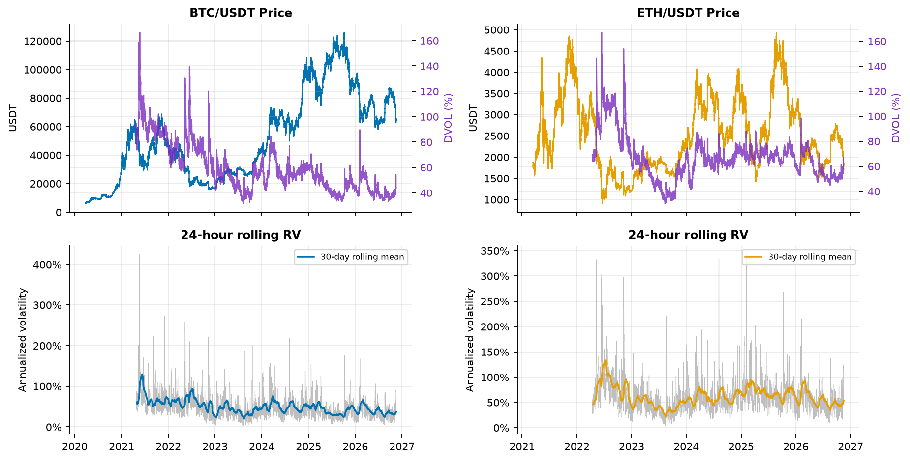
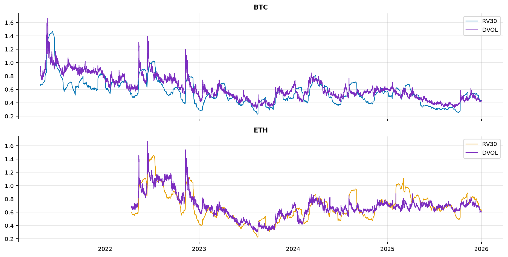
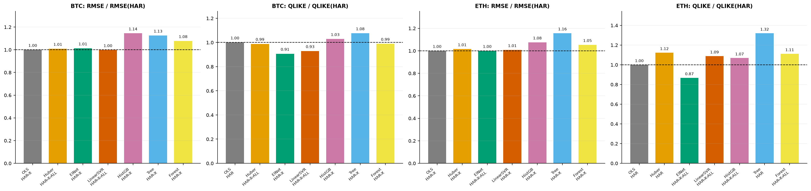
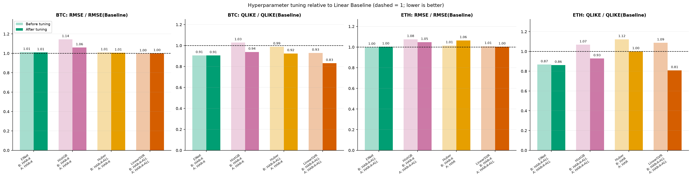
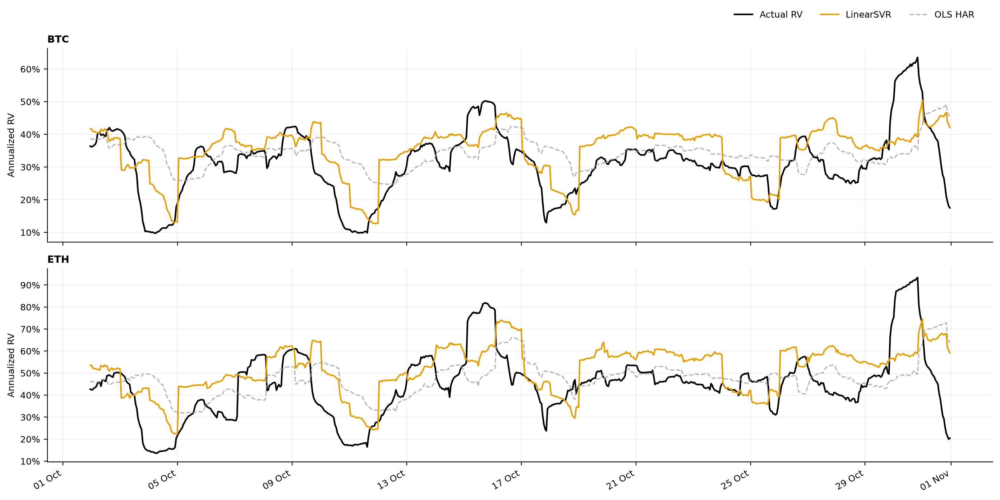

1. Abstract
This study examines the predictive value of market-derived features for forecasting realized volatility (RV) in BTC and ETH. Using high-frequency cryptocurrency market data, we construct hourly forecasts of forward 24-hour annualized RV. We investigate several predictors: RV, trading volume, returns, historical volatility percentile ranks, options-implied volatility (DVOL), and calendar effects. Each feature is examined through descriptive statistical analysis, hypothesis formulation, and out-of-sample forecasting experiments across multiple estimators.
Forecasting performance is evaluated using walk-forward validation and a separate held-out test. The analysis aims to identify which features provide robust incremental information, and to explain why statistically apparent relationships do not necessarily translate into improved forecasting accuracy.
Results
The HAR-D + DoW specification reduces validation RMSE relative to HAR for both BTC and ETH. Alternative regression algorithms yield larger improvements in QLIKE than in RMSE. On the held-out test, LinearSVR outperformed the classical HAR benchmark in both metrics, reducing RMSE and QLIKE by approximately 13.4% and 27.8% for BTC, and 4.5% and 19.0% for ETH, respectively. Among the evaluated models, HistGB achieved the lowest test RMSE for ETH, while LinearSVR achieved the lowest QLIKE.
2. Data and Methodology
2.1. Realized Volatility and Forecast Target
RV is estimated from ByBit 5-minute OHLC price data using five variance estimators: close-to-close (Raw), Parkinson, Garman–Klass, Rogers–Satchell, and Yang–Zhang. The annualized variance estimates are averaged across estimators before taking the square root to obtain realized volatility. The resulting RV measures over 1-day, 7-day, and 30-day windows are denoted by rv₁, rv₇, and rv₃₀, respectively.
The forecasting target is defined as:
yt = rv1, t+24
2.2. Forecasting Framework
Models are evaluated using an expanding-window walk-forward procedure. The development period extends from April 24, 2021, for BTC and April 14, 2022, for ETH, through December 31, 2025. The held-out test period covers January 1 through October 31, 2026. Test data are reserved for a held-out test, while train data is used for model development and validation. Following an initial 12-month training period, models are refitted monthly using all available historical observations and evaluated on the subsequent calendar month. The final 24 training observations are excluded to ensure that all training targets are fully observed before the validation period begins. Model selection is based exclusively on validation performance, with selected configurations subsequently evaluated on the held-out test.
Model Evaluation and Selection
Model configurations were selected based on both RMSE and QLIKE. While RMSE provides a symmetric measure of average forecasting error, QLIKE is our primary metric for practical application because it heavily penalizes the underestimation of volatility. Initial experiments focused on RMSE revealed that adding Day-of-Week (DoW) and replacing RV30 with DVOL improved RMSE. However, this came at the cost of degraded QLIKE. Subsequent experiments were therefore designed to find a model that retains the RMSE benefits of these features while restoring or improving QLIKE.
3. Validation
3.1. Feature Definitions
- rv₁, rv₇, rv₃₀ — RV over 1, 7, and 30 days (see 2.1).
- vol_d, vol_w — trading volume aggregated over rolling 24-hour and 168-hour windows.
- ret_d, ret_w — log returns calculated over 24-hour and 168-hour periods.
- prank₁, prank₇, prank₃₀ — historical percentile ranks of the corresponding RV estimates, calculated against the preceding 8,760 hourly observations.
- DVOL — Deribit DVOL index.
- dow₁–dow₆ — day-of-week dummy variables, with Monday as the reference category.
| Model | Specification |
|---|---|
| Naive | Forecast at t+24 = current rv₁ (persistence) |
| HAR | rv₁, rv₇, rv₃₀ |
| HAR-D | rv₁, rv₇, DVOL |
| HAR-X | HAR-D + DoW |
| HAR-X-All | HAR-X + vol_d, vol_w, ret_d, ret_w, prank₁, prank₇, prank₃₀ |
3.2. Feature–Target Correlations
| Feature | BTC Pearson | BTC Spearman | ETH Pearson | ETH Spearman |
|---|---|---|---|---|
| rv₁ | 0.61 | 0.65 | 0.62 | 0.66 |
| rv₇ | 0.58 | 0.64 | 0.54 | 0.63 |
| rv₃₀ | 0.44 | 0.53 | 0.41 | 0.51 |
| prank₁ | 0.44 | 0.49 | 0.48 | 0.55 |
| prank₇ | 0.41 | 0.47 | 0.43 | 0.51 |
| prank₃₀ | 0.27 | 0.34 | 0.29 | 0.38 |
| vol_D | 0.19 | 0.22 | 0.42 | 0.51 |
| vol_W | 0.04 | 0.12 | 0.33 | 0.47 |
| ret_D | −0.13 | −0.05 | −0.18 | −0.07 |
| ret_W | −0.26 | −0.11 | −0.26 | −0.12 |
| DVOL | 0.56 | 0.62 | 0.52 | 0.58 |
Table 2 reports correlations between the candidate features and target. RV and DVOL exhibit the strongest positive associations with the target, while percentile ranks and trading volume show moderate relationships. Returns exhibit relatively weak negative correlations. These results provide an initial descriptive assessment of the predictors but do not establish their incremental forecasting value beyond the benchmark model.
3.3 Experiments

| Asset | Model | RMSE | QLIKE |
|---|---|---|---|
| BTC | Naive | 0.230 | 0.618 |
| BTC | HAR | 0.205 | 0.339 |
| ETH | Naive | 0.296 | 0.482 |
| ETH | HAR | 0.257 | 0.338 |
Experiment 1: Replacing the 30-day RV component of HAR with DVOL, adding DoW
As shown in Table 2, DVOL exhibits a stronger correlation with target than the 30-day RV component for both BTC and ETH. This motivates testing whether replacing rv₃₀ with DVOL improves out-of-sample forecasting accuracy.
Given the continuous operation of cryptocurrency markets, trading activity and volatility may exhibit systematic differences across days of the week. This experiment also tests whether incorporating day-of-week dummy variables improves the forecasting performance of HAR-D.

| Asset | Model | RMSE | QLIKE |
|---|---|---|---|
| BTC | HAR | 0.205 | 0.339 |
| BTC | HAR-D | 0.200 | 0.370 |
| BTC | HAR-X | 0.189 | 0.428 |
| ETH | HAR | 0.257 | 0.338 |
| ETH | HAR-D | 0.251 | 0.357 |
| ETH | HAR-X | 0.241 | 0.401 |
The HAR-X specification achieves the lowest RMSE among the OLS specifications for both BTC and ETH, reducing validation RMSE by approximately 7.8% and 6.2%, respectively, relative to HAR. However, this improvement is accompanied by a substantial deterioration in QLIKE.
Experiment 2: Comparison of Regression Algorithms
The second experiment evaluates whether alternative regression algorithms improve forecasting accuracy relative to the best OLS results. The best OLS value for each metric, taken across the specifications in Table 1, serves only as a selection hurdle: an algorithm–feature combination had to beat the best OLS value for RMSE and for QLIKE separately to be considered. We compare Huber, ElasticNet, LinearSVR, histogram-based gradient boosting, trees and forest using the same expanding-window walk-forward validation procedure. Implementations and parameter settings are documented in the accompanying code.
Overall, alternative regression algorithms provided limited improvements over OLS. Only ElasticNet achieved lower QLIKE for both assets. Given the limited improvements obtained with the initial configurations, we next investigate whether hyperparameter optimization can improve forecasting performance.
| Algorithm | BTC Model | BTC RMSE | BTC QLIKE | ETH Model | ETH RMSE | ETH QLIKE |
|---|---|---|---|---|---|---|
| OLS | HAR-X / HAR | 0.1885 | 0.3393 | HAR-X / HAR | 0.2411 | 0.3375 |
| Huber | HAR-X-All | 0.1901 | 0.3353 | HAR-X / HAR | 0.2447 | 0.3788 |
| ElasticNet | HAR-X | 0.1908 | 0.3074 | HAR-X-All | 0.2411 | 0.2926 |
| LinearSVR | HAR-X-All | 0.1880 | 0.3150 | HAR-X / HAR-X-All | 0.2431 | 0.3671 |
| HistGB | HAR-X | 0.2157 | 0.3489 | HAR-X / HAR-X-All | 0.2592 | 0.3605 |
| Tree | HAR-X | 0.2120 | 0.3650 | HAR-X / HAR | 0.2786 | 0.4453 |
| Forest | HAR-X | 0.2030 | 0.3354 | HAR-X / HAR-X-All | 0.2538 | 0.3749 |
Note. For each algorithm and asset, RMSE and QLIKE are minimized independently across feature specifications. The OLS metrics are shown for reference. Bold indicates the lowest value within each metric and asset.

Experiment 3: Hyperparameter Optimization
Hyperparameters were selected to minimize QLIKE, subject to RMSE not exceeding the minimum RMSE obtained for the same algorithm and asset by more than 5%. This constraint was introduced because the configurations minimizing RMSE and QLIKE did not always coincide.
| Asset | Algorithm | Selected parameters | Model | RMSE before | RMSE after | QLIKE before | QLIKE after |
|---|---|---|---|---|---|---|---|
| BTC | Huber | α=0.001; ε=2.5 | HAR-X | 0.1901 | 0.1896 | 0.3353 | 0.3134 |
| BTC | ElasticNet | α=0.01; L1=0.4 | HAR-X | 0.1908 | 0.1902 | 0.3074 | 0.3071 |
| BTC | LinearSVR | C=0.01; ε=0.2 | HAR-X-All | 0.1880 | 0.1885 | 0.3150 | 0.2819 |
| BTC | HistGB | lr=0.05; i=100; n=7 | HAR-X | 0.2157 | 0.1998 | 0.3489 | 0.3183 |
| ETH | Huber | α=0.001; ε=20.0 | HAR | 0.2447 | 0.2566 | 0.3788 | 0.3375 |
| ETH | ElasticNet | α=0.05; L1=0.1 | HAR-X-All | 0.2411 | 0.2418 | 0.2926 | 0.2910 |
| ETH | LinearSVR | C=0.01; ε=0.25 | HAR-X-All | 0.2431 | 0.2417 | 0.3671 | 0.2729 |
| ETH | HistGB | lr=0.05; i=100; n=7 | HAR-X-All | 0.2592 | 0.2525 | 0.3605 | 0.3133 |
Note. For HistGB, lr denotes learning_rate, i denotes max_iter, and n denotes max_leaf_nodes. “Before” reports the independently minimized RMSE and QLIKE values from Experiment 2; these values may correspond to different feature specifications. “After” reports both metrics for the selected tuned configuration.

Hyperparameter tuning generally produced modest RMSE improvements, with a more substantial reduction for BTC HistGB. Improvements in QLIKE were more pronounced across several algorithms. The results suggest that hyperparameter selection can improve QLIKE even when RMSE changes only slightly or deteriorates.
Experiment 4: Ensemble Evaluation
We evaluated equally weighted and optimized weighted combinations of Huber, ElasticNet, and LinearSVR using expanding-window validation. The best ensembles provided only marginal RMSE improvements over the strongest individual models, while QLIKE showed little or no improvement. The optimal weights were often concentrated in a single estimator, suggesting limited incremental benefit from combining these models.
4. Test
| Asset | Algorithm | RMSE val | RMSE test | QLIKE val | QLIKE test |
|---|---|---|---|---|---|
| BTC | LinearSVR | 0.1885 | 0.1122 | 0.2819 | 0.1518 |
| BTC | HistGB | 0.1998 | 0.1138 | 0.3183 | 0.1637 |
| BTC | ElasticNet | 0.1902 | 0.1184 | 0.3071 | 0.1700 |
| BTC | Huber | 0.1896 | 0.1165 | 0.3134 | 0.1773 |
| BTC | OLS HAR | 0.2050 | 0.1296 | 0.3393 | 0.2104 |
| ETH | LinearSVR | 0.2417 | 0.1728 | 0.2729 | 0.1741 |
| ETH | ElasticNet | 0.2418 | 0.1689 | 0.2910 | 0.1816 |
| ETH | HistGB | 0.2525 | 0.1684 | 0.3133 | 0.1857 |
| ETH | OLS HAR | 0.2566 | 0.1810 | 0.3375 | 0.2150 |
| ETH | Huber | 0.2566 | 0.1824 | 0.3375 | 0.2243 |
The selected model configurations were evaluated on the held-out test period, which was excluded from feature selection and hyperparameter optimization.
The lower test errors may partly reflect less volatile market conditions rather than an improvement in the models' underlying predictive ability. In particular, periods of elevated volatility and abrupt market movements present greater forecasting challenges. Therefore, performance differences between validation and test periods should be considered alongside comparisons with benchmark models evaluated over the same test observations.

Interactive Plotly charts, January–October 2026. Zoom, pan, inspect hourly values and toggle model traces.
5. Conclusion
This study examined the predictive value of market-derived features and compared several regression algorithms for forecasting 24-hour RV for BTC and ETH.
Replacing the 30-day RV component of HAR with DVOL and incorporating day-of-week effects improved validation RMSE for both assets, although these improvements were accompanied by higher QLIKE values. Additional features, including trading volume, returns, and historical volatility percentile ranks, provided algorithm-dependent benefits rather than consistent improvements across all algorithms. The extended feature set did not provide consistent improvements across algorithms. Its benefits were more evident for regularized linear estimators, particularly LinearSVR and ElasticNet, suggesting that the effectiveness of additional predictors depends on the estimation method.
On the held-out test, LinearSVR achieved the lowest RMSE and QLIKE for BTC. For ETH, HistGB achieved the lowest RMSE, while LinearSVR provided the best QLIKE.
Overall, the findings suggest that feature selection, regression methodology, and the choice of evaluation metric all influence volatility forecasting performance. Improvements in one metric do not necessarily translate into improvements in another, highlighting the importance of evaluating forecasting models using multiple complementary criteria.
Code and data availability: GitHub repository.